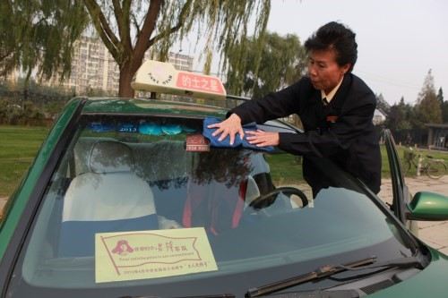

志愿者：王凤进
桂电志愿者网 日期：2017-10-19 来源：中国志愿服务网

王凤进,女, 生于1958年5月,首都的士雷锋车队。
2007年10月15日，王凤进聆听十七大报告，看到祖国日益繁荣昌盛，心中萌生了成立一支雷锋车队的想法，得到了银山出租公司的支持。王凤进经过紧张的筹备，吸收单位“的士之星”和党员参加，首都的士雷锋车队于2007年12月29日上午正式成立，王凤进为队长。她坚持自学外语，掌握了英语、韩语、日语、泰语、德语、越语等6个国家语言的基本交流。她的客人有中国人，也有外国人，有北京人，也有外地人，无论是谁，她对待客人就像亲人一样。
2010年8月，王凤进看到残疾人打车难的报道后，公布了个人电话，仅她自己，就免费接送老年人和肢体残疾乘客800多人次。平时，每接送一位乘客就放进“爱心油桶”一块钱，10多年来，先后捐出善款5万元。在她的带领下，“首都的士雷锋车队”不断成长壮大，队员从最初的25人增加到220人，便民服务项目也从原来的几项增加到20项，每天穿梭在京城大街小巷，将温暖的手伸向那些有困难的乘客和群众，让雷锋的车辙在首都绵延。“雷锋车队”还与北京雷锋小学、海淀残联、丰台敬老院等单位结成共建和帮扶对子，成了名副其实的“车轮上的党支部”。
2012年以来，在她的倡导下，成立了“全国雷锋车队大联盟”，天津、上海、长沙、郑州、杭州、兰州等地已经成立了120支“中国雷锋车队”，遍及全国26个省市，共5万多人。她荣获第三届“中国石油北京杯”首都十大的士英雄、北京市“百姓爱心故事”十大明星、首都精神文明建设奖章、北京市三八红旗奖章、首都五一劳动奖章、全国五一劳动奖章、首都“身边雷锋·最美北京人”标兵、第四届全国道德模范提名奖。
【责任编辑：刘亚楠】